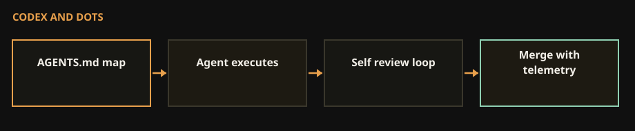
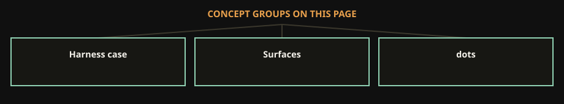

Codex and dots
Codex power use rests on one OpenAI post: harness engineering. Humans steer. Agents execute. The repo forms the system of record.

Dots clarification. Dots is not a Codex file feature. OpenAI dots is an always on personal agent. Launch date: 29 September 2026 at DevDay. Launch reports name GPT-6 Astra as the model. A user can launch dots from Codex or from ChatGPT. High
Version facts
Codex CLI 0.167.0 came on 6 November 2026 with an agent command centre. Versions 0.168.0 and 0.169.0 came on 13 November 2026. Version 0.169 adds a trust rule: codex exec turns off project config and MCP servers in a folder with no trust, till a trust flag passes. Medium to High
A claim for 0.170.0 on 18 November rests on one secondary tracker. Medium Low
Default model in Codex stays contested. OpenAI pages disagree on some replacement names per tracker notes. Pin a full model name in config. Do not trust a blog line for a model name.
Workflow X1. Harness engineering, one million lines, no hand code
OpenAI reports a five month build from an empty repo. A team of three engineers, later seven, drove Codex to about one million lines and about 1,500 merged pull requests. Hand code count in the post: zero lines. High, company source
- Humans steer. Agents execute. An engineer states a task, runs an agent, and lets the agent open a pull request.
- Self review loop. Codex reviews own changes, calls more agent reviews in local and cloud runs, answers all notes, and loops till agent reviewers pass.
- Legible app. The app boots per git worktree. Chrome DevTools links give DOM views, screenshots and page moves as a skill. Logs and traces sit in a per worktree stack, so a prompt such as startup under 800 ms turns into a check.
- Repo as record. Data out of the repo does not exist for the agent. A short AGENTS.md file, near 100 lines, acts as a table of contents to a docs tree. Docs hold design, plans with progress logs, and quality scores.
- Doc care agent. One agent scans for stale docs and opens fix pull requests. Linters check doc freshness, links and form.
- Limits, not steps. Each domain holds fixed layers: Types, Config, Repo, Service, Runtime, UI. Cross acts pass through one Providers face. Linter error text holds fix steps for the agent.
- Merge rule shift. Short life pull requests, few block gates, fast fix for flakes. The post warns: this rule set needs high agent throughput and cheap correction. Low throughput teams must not copy the merge rule.
Single Codex runs in the post work up to six hours on one task.
Workflow X2. Cloud task and pull request review loop
- Delegate from ChatGPT, GitHub, Slack or a phone. One task gets one cloud sandbox with the repo loaded.
- Review evidence: terminal logs and test outputs with citations.
- Ask for revisions, or open a pull request.
- In a pull request, comment with a codex review command. A focus form names a risk area, such as security regressions.
- Any other codex comment starts a cloud task with the pull request as context.
- Steer review acts with the AGENTS.md file near the files in review. Near files win over far files.
Workflow X3. Inner loop and outer loop
Inner loop: AGENTS.md config, code and tests in a local CLI or IDE run. Outer loop: Codex sorts Linear tickets, pre reviews pull requests before a human read, and checks Sentry crashes against recent commits. One livestream write up carries this split, plus a claim of an Android app build in 18 days by four engineers. Medium Low
Tutorial in eight parts
1. Question
How can a solo engineer copy harness engineering at small scale?
2. Key facts
OpenAI harness post facts sit in source row 33. Cloud review acts sit in rows 32 and 34.
3. Core concepts
AGENTS.md map, exec plan, layer rule, Providers face, doc care. An exec plan lives in the repo with a progress log and a decision log.
4. Patterns and feedback loops
Steer, execute, self review, agent review, merge, doc care. Review effort moves from humans to agents first.
5. Conflicts and common errors
A common error writes a long AGENTS.md file as a full manual. Agents lose the map. Keep the file near 100 lines and link out.
6. Hypotheses
A doc care agent may pay off at 50 docs and waste tokens at 5 docs. Scale the act to repo size.
7. Decision support
Copy the map, the layer rules and the self review loop first. Add doc care and cloud review after pull request volume grows.
8. One bounded next action
Cut your AGENTS.md file to a map this week. Add one docs page per area, one exec plan form, and one lint rule with fix text in the error line.

Visual map of this page
Three views of one page: a Mermaid flow for work order, a markmap for concept groups, and a read guide for the flow.
Mermaid source, for offline read
flowchart LR A[Human steers] --> B[Codex executes] B --> C[Self review] C --> D[Agent reviewers] D -->|notes| B D -->|pass| E[PR merge] E --> F[Doc care agent]
How to read the flow diagram. Step 1: start at the left box. Step 2: follow each arrow to the next stage. Step 3: at a branch box, read both paths before a choice. Step 4: a loop arrow means work returns for one more pass vs a test.
Markmap: concepts on this page
- Codex and dots
- Harness case
- Near 1M lines, company report
- Zero hand code claim
- AGENTS.md near 100 lines
- Surfaces
- CLI 0.169.0
- Cloud tasks
- PR review commands
- dots
- Personal agent, not a Codex feature
- 29 Sep 2026 launch
- Harness case